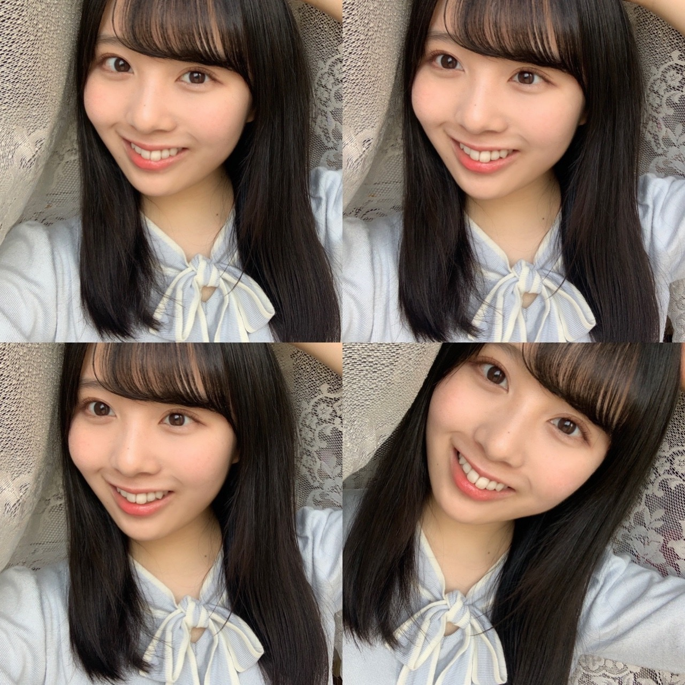

2020/0607Sun紫色の空。佐藤璃果
サイレンが聞こえた。
家族が寝静まり、一人ぼっちだった私は
なんとなく、怖いな。と感じるだけだった。
髪を乾かしていると、
急にドライヤーが止まった。
ドライヤーが停止したのと同時に、
私の頭の中では猛スピードで
ある考えが駆け巡っていた。
鬼にやられてしまうのではないか。
すぐさま友達に連絡して、助けを求めた。
電気はついている。ブレーカーは落ちていない。
なぜだ。なぜドライヤーが止まったんだ、
やはり鬼が来るのではないか。
ただコンセントが抜けていただけだった。
とても恥ずかしくなった。
そんな最近の出来事です。
*****************************************
こんにちは~☺︎
ブログを開いて下さり、
ありがとうございます。
"緊張する時はりかちゃん思い出すようにしてる♡"
とのメッセージをくれた
くろみんよりバトンを貰いました❁︎
じめじめですね、、
乃木坂46 新4期生 岩手県出身
佐藤 璃果(さとう りか)です。


・髪の毛の好きなヘアアレンジは何ですか？
とのご質問を頂きました。
上2つの
ハーフツインくるりんぱ
のような髪型が好きでして、
去年の夏はこの髪型でいる事が多かったです。( ˶˙ᵕ˙˶ )
*****************************************
冒頭の鬼というのは
最近やっと｢鬼滅の刃｣を見始めました。
お父さんが買ってきた漫画を読んでいます。
影響されすぎです()
とても焦りました。
すこし怖かったです( ' ³ ' )
今日は日曜日ですが、みなさん、
いかがお過ごしでしょうか。
大気の状態が不安定で、
雨が降ったりしますね。
昨日は紫色っぽい空が見えました。
幻想的でした。
空の色の種類って沢山あると思いませんでしたが、結構色んな色の空、ありますよね。
~~~質問コーナー~~~
ずっと前に答えます！考えておきます！と
言ってまだ答えていなかったものです↓
〇乃木坂の歌で何が好きですか？
もう少しの夢、きっかけ、悲しみの忘れ方、
僕のこと、知ってる？、ここにいる理由、
別れ際、もっと好きになる、嫉妬の権利、
不等号、ブランコ、自分のこと、やさしさとは、強がる蕾、命は美しい、他の星から、
せっかちなかたつむり、三角の空き地、日常、設定温度、君に贈る花がない
絞りました、頑張りました、。
ちゃんと考えなくては！と思い、もう一度調べて確認していたら遅くなりました。
全部好きです。
○これからの目標はありますか？
❁︎沢山あります。長くなりそうなのでまた今度ちゃんとお話します。
***************************
↑#1での事ですね
今はネガディブだめだめですが、
人として成長して、強く優しい人になる事。
誰かの日々の生きる希望に
なれたらいいなと思います。
｢100年後も誰かの記憶に残っていられるような人に｣
と坂道研修生時代に掲載していただいた
BRODY12月号さんでお話させて頂きました。
ビジュアル面も、
乃木坂46の一員としての自覚を持って磨いて行けたらいいなと思います。
あとは応援したい、応援していて良かった！
という気持ちに沢山なって頂けるように
努めたいです☺︎
あとは日々を楽しめる人になりたいなって
最近よく思います。
これらと関係して...前に答えようとして、
長さ的にまだ答えていなかったものです！
〇これからやってみたいお仕事とかありますか？？
色々です。色んなことを経験して自分にしか無い何かを見つけたいです。
具体的に言うと、
・地元に関係するお仕事。
・お化粧やお洋服に関わるお仕事。
・食に関わるお仕事。
・ドラマや映画のお仕事。
でも、やってみたいお仕事は色々りますが、
乃木坂46に配属して頂いて、頑張る場所を頂いたばかりなので、乃木坂46の活動も大事に大事にしていきたいです❁.
以上！前に答えると言って答えていないシリーズでした！
考える時間を下さり、ありがとうございました。
毎度、重くなりがちなので、
気をつけています(; ;)
前、また今度！と言っていた話題も
これから少しずつ話していきますね~

こちらは多分、真面目キラーんポーズです。
~~~普通の質問コーナー~~~
〇次、作りたいと思う料理とかってある？？
クレームブリュレを作りたいです。
あとは、ロールキャベツとか！
地元の友人がお菓子作りのプロすぎて、
あんなお菓子を作りたい、、
思います！( ˊ࿁ˋ )
〇黄緑のキウイか金色のキウイどっちが好き〜？
いつも緑のキウイです|•'-'•)و✧
〇朝に強いタイプですか？また、りかちゃんにモーニングコールしてもらってもいいですか？笑
お仕事の日とか起きなくては！と思う日はだいたい起きれます。でもお仕事に遅れてしまっては大変なので、一応お母さんにモーニングコールもお願いしています。
りか) 朝です~！一日が始まるよ~起きて~！
○璃果ちゃんは辛い食べ物は好き？
大好きです。
インドカレー屋さんではMAXの辛さで
食べることが多いです。
キムチも大好きで、最近毎日のように食べています。
〇花火大会とかの屋台で絶対外せないのは？
いちごあめです！☺︎
あとはフランクフルト！
〇璃果ちゃんの朝のルーティンを教えてください！
トイレに行って体重を測って、
白湯を飲みます。
あ、その前にベッドでは一生懸命にメガネを探すところからスタートです。
〇使ってるリップは？
最近お気に入りは
♡CANMAKEさん
ステイオンバームルージュT05
♡シャインリッチさん
オールインワンティント17
♡B IDOLさん
やきもちPINK
♡DIORさん
アディクトリップマキシマイザー007
アディクトリップグロウオイル001
（欅坂46さん新2期生守屋麗奈さんからの誕生日プレゼント♡）
です！
私もメイクに関して至らない点ばかりなので、ぜひ、皆さんのおすすめ教えて下さい。

最近全身がなかったので、
唐突な研修生ツアーの写真！
プチトーク
全身はくろみん(黒見明香ちゃん)が
撮ってくれることが多いです。
くろみんが撮って~と言ってくれることが多くてその後にじゃあ！私もお願い！と言えるのでいつも助かっています！
*****************************************
明日は可愛い子が大好きなるなぴです。
いつの間にかバトンがどこかに行ってしまったのかな、、どうなんだろうか！
*****************************************
皆さんにとって今日が
素敵な一日になりますように。

笑顔の4分割！
明日からまた一週間、
無理せずいきましょうね~！
毎日お疲れ様です( . .)
いつもコメントありがとうございます。
待ってます。
またね。
#9 ✿ り か ✿